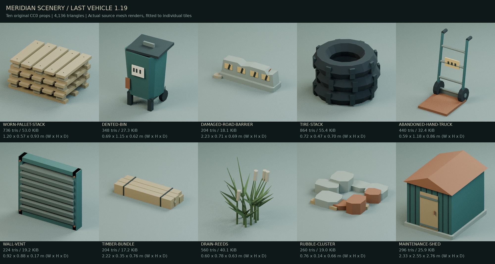

Last Vehicle 1.19 — Patrols, wayfinding and the night yard
A GingrSnaps Project · Low-poly browser horror · 6 November 2026
This is the complete source project and playable HTML5 game. It includes the garage, service yard, controllable escape, failure recovery, saves, settings, intro, credits, models, textures and audio. Version 1.19 fixes concrete outdoor guidance and enemy movement faults, adds 90 scenery placements from ten new original models, and gives the night a darker lighting treatment and a much denser star field.
The build is a downloadable release candidate. The available QA browser reports WebGL unavailable, so rendered lighting, sound balance, real hardware performance and a full human playthrough remain unverified. Automated tests use the actual shipped geometry and production gameplay handlers. Live 1.12 remains unchanged pending the accepted rendered-playthrough gate. The exact earlier crash was not reproduced from a supplied crash log; existing allocation, context-loss and checkpoint protections remain in place.
1. Start and upgrade safely
- Extract LastVehicle_Browser_Complete.zip into a new folder. Keep the previous project as a backup.
- Have Python 3.10+ or Node.js 20+ installed. You need only one, with no package installation.
- Windows: double-click START_WINDOWS.bat. macOS/Linux: run sh START_MAC_LINUX.sh.
- The launcher opens http://127.0.0.1:8080/. Leave its terminal open. Close an earlier local game server first if it uses that port.
- Start or continue, wait for preparation, then click Enter game or Resume game. Mouse capture requires that click. Move the mouse freely; Escape pauses and releases it.
- If an embed denies capture, use the standalone-tab link. Drag controls are an explicit fallback, not a requirement for ordinary mouse-look.
Equivalent terminal commands, run from the extracted folder:
python START_GAME.pynode tools/serve.mjs --openDo not double-click dist/index.html. Loading it through file:// can block model/audio requests. Python or Node serves the bundled files; the game itself is JavaScript running in the browser. No Unreal installation, paid software, CDN, game server, account or API key is needed. Blender is only needed to rebuild editable art.
Existing save schema 3 and settings remain compatible. Export a save from Pause before switching browser origins or clearing site data. Using the same local address and port preserves that browser's existing storage. Live, local and itch pages have separate storage; import the exported JSON to transfer progress.
2. Controls, hints and settings
| Action | Default control |
|---|---|
| Walk / look | W A S D / move the mouse |
| Use / enter or leave a shelter | E, shown at a reachable object |
| Sprint / crouch | Left Shift / C |
| Flashlight | F; the hand and torch are hidden when off |
| Journal / optional hints | J / H |
| Briefly show current task | Tab |
| Throw bolt | Hold Q to aim; release to throw |
| Drive | W/S accelerate, brake and reverse; A/D steer |
| Leave car | E, only stopped with space at the driver door |
| Pause | Escape |
The journal contains Task, Hints, Notes, Map and Controls pages. Reading pauses gameplay. The compact objective can be Always visible, On request, or Journal only. A hint does not advance an objective or consume an item. Each task offers progressively more explicit help.
Choose Request a temporary direction marker in the journal. A floor arrow follows a walking route around real blockers. Once close, a hollow upright diamond surrounds the usable handle or panel. Aim at the diamond's centre, then press the displayed use key. The use prompt still checks actual reach, sight and prerequisites. Guidance lasts one minute of active play and can be requested again. A sign naming a machine is not itself the interactive object.
Previously the diamond floated 0.62 m above the interaction point. Following it precisely could select nothing. This is now corrected, and tests aim at the displayed marker before calling the actual interaction handler. A clear but unreachable approach can also fall back to other clear viewpoints through bounded path searches.
The journal maps now agree with the north-facing camera rather than mirroring its left/right layout. Outdoor instructions name landmarks instead of relying on reversed relative directions. The utility and gatehouse arrows, loading labels, handover note, driving hints and OPEN LANE sign are updated together.
Settings retain sensitivity, separate mouse axes, remapping, hold/toggle controls, optional standard controller support, audio buses, dynamic range, loud-effect level, subtitles, UI/prompt size, difficulty, FPS/frametime/1% low display, resolution, render scale, shadow quality, glow, FXAA, frame caps and fullscreen. Graphics changes use Apply/Keep/Revert. Start on Low if unsure. Stable horizon defaults on; bob, shake and sway can be reduced separately.
Rain/steam can be Off, Reduced or Full. Night sky brightness affects the background only. Gentle scenery motion and Reduced motion control decorative drift. Browser VSync and operating-system display resolution are controlled by the browser/OS; a canvas resolution option cannot change them. A frame cap is not a guaranteed FPS.
3. Complete walkthrough — solutions below
- Inspect bay 042. Use the teal car's hood or door. The sabotage notice explains the battery and cut lead. The overhead lights fail. Raise the flashlight with F.
- Recover the battery. Take it from the floor near the car's front. Inventory distinguishes carrying a part from installing it.
- Find the maintenance key. Take the brass key ring from Security's raised tray. The window contact is a story encounter; the glass protects you from that contact, and the hunter then takes a real route around the partition.
- Take repair supplies. Use the Workshop's labelled cabinet. One pickup supplies the replacement battery cable and exit-control fuse. The service shortcuts become available.
- Repair the car. Use the open hood. Let the installation finish; E can cancel a held action if you need to flee. Completed parts are not lost.
- Restore exit power. In Electrical select VENTILATION → LIGHTING → ACCESS. A wrong order resets the sequence without consuming the fuse.
- Authorize the shutter. Enter 1986 at Security's terminal. The founding-year clue appears in the log and dedication plaque.
- Raise the garage shutter. Use the exit motor. Continue into the service yard on foot. The shutter noise can draw the hunter; it starts guarding the outside chapter rather than repeatedly disappearing into the far garage.
- Inspect 01 BARRIER CONTROL. Follow the paved strip beside the loading dock to the amber panel, before the cargo dolly. Aim at the cabinet's panel, not its overhead sign or the fence. Its handover enters the journal.
- Use 02 UTILITY SELECTOR. Cross to the generator awning opposite the loading dock. Aim at the yellow selector handle on the cabinet's open-yard face. Choose LOADING OFF, then GATEHOUSE ON. A wrong selection is recoverable.
- Release BARRIER BRAKE. Enter 03 GATEHOUSE through the doorway facing the garage. Find the yellow wheel beside the damaged side door. Use it to raise the paired street-barrier booms. The front doorway remains usable even while the side door is closed.
- Clear the lane with 04 DOCK WINCH. Find the labelled winch beside the closed loading shutters. It pulls the dolly sideways along a covered ground channel. Let the action finish, then return to bay 042. There is no loose cable pickup in the yard.
- Drive out. Enter the driver door, wait for the entry/latch animation, drive out of the bay and along the main lane. Pass the garage shutter and open street barrier. Follow the OPEN LANE arrow around the roadworks container, then the amber road lamps to the street. W/S brakes and reverses if you need to reposition. Walking to the end does not complete the vehicle escape.
The three-second A GingrSnaps Project intro, ending, credits and retry flow are retained. Optional evidence changes the ending report; reading all lore is not mandatory. First-exploration pacing targets 25–35 minutes, but this is a design target, not a measured duration. There are no artificial waiting periods to pad it.
4. What changed in the hunter
The previous patrol had 11 sparse stops, mostly in the centre of the garage. A selection-time age score increasingly outweighed other choices, creating a predictable long circuit. In the audited medium runs it first reached the outside after approximately 108–119 seconds and could leave it unattended for 160–180 seconds.
The new planner has 21 named stops in five sections: garage entrance, middle garage, rear service area, loading side and utility/gatehouse side. These include both car aisles, Security, Storage, Electrical, Workshop and Pump. It selects reachable goals using the prepared visibility graph, completes short section sweeps, caps age bonuses, records actual arrivals and temporarily avoids failed goals. Patrol decisions happen at destinations, not every animation frame.
Public progression changes priorities. Opening the shutter directs later quiet patrols into the yard with short entrance sweeps. Clearing the dolly returns attention to the garage while retaining outside visits. This does not read a hidden player's position, teleport the monster or cancel a chase, a witnessed locker inspection or a bolt stagger.
A separate reproduced movement fault affected pillar corners. The old follower could discard a nearby path node before its body cleared the pillar. Replanning then reset its stuck timer indefinitely. It now verifies the swept next segment before skipping that corner, completes the final centimetres when necessary, and keeps an independent no-progress watchdog across replans. Recovery is a physical backstep, never a position snap through a wall.
The existing perception systems remain: real sight lines, directional hearing through doorways, wet footprints, visible flashlight patches, last-seen movement, short prediction, observed-loop cutoffs, cover searches and evidence-based locker inspection. Fresh sight wins over distractions. An unseen locker is not automatically known to be occupied.
Bolts remain optional tools. Throw onto metal or another audible surface after breaking sight to draw an investigation, or hit the body for a brief stagger. Easy gives 2.1 seconds, Medium 1.55 and Hard 1.05. Repeated immediate hits resist permanent stun-lock; repeated noise in one area becomes less persuasive. Three finite refill trays exist in Workshop, the dock and gatehouse. Existing protections prevent scripted encounters from cancelling an earned stagger.
5. Scenery, sky and lighting

Ten new original CC0 models add 90 authored placements, supplementing the existing 55 yard-pack placements and earlier garage assets. Their combined prototype files total 314,888 bytes and 4,136 triangles. Repeated placements still cost geometry; the prototype total is not the rendered scene total.
| New model | Placement purpose |
|---|---|
| Worn pallet stack | Loading supplies and service-room storage |
| Dented bin | Wall-side disposal points |
| Damaged road barrier | Roadworks shoulders beyond playable fencing |
| Tire stack | Garage corners and maintenance clutter |
| Abandoned hand truck | Supply areas beside existing workstations |
| Wall vent | Actual loading-wall and gatehouse wall faces |
| Timber bundle | Wall-side stored materials |
| Drain reeds | Damp fence and road margins |
| Rubble cluster | Wall bases and background ground |
| Maintenance shed | Scenery beyond the playable area |
The models have finite UVs and use the existing shared weathered wood, metal, rubber, concrete and moss recipes. Full editable Blender source, commented generator, dimensions, anchors, hashes, validation scripts and actual studio renders are included in source-assets/scenery-v119/. The contact sheet shows their source geometry and palette, not a rendered screenshot of the game.
Large new floor props have measured collision bounds. Small reeds/rubble and inaccessible background props have no invisible full-size collision boxes. The placement checks cover ground contact, wall-vent facing, large-body overlaps, control access and the complete dolly sweep. Trees have been moved out of the distant building footprints. Background sheds, bushes, industrial silhouettes and windows sit beyond the fences.
Perimeter fencing now terminates at its shared corners. Footings sit at actual posts, and coincident corner posts are reused. Loading signs face the accessible yard; gatehouse signs have physical wall/lintel support. The selector instruction plate fits its cabinet. Two approximately six-metre booms replace the 29.5-metre arm that previously rose over 30 metres. The loose diagonal tow line and unsupported roof conduit are removed; a low covered channel follows the dolly's straight movement.
The sky contains 640 stable stars, a restrained moon and broken cloud silhouettes, drawn with three unlit meshes. It uses no downloaded sky image, dynamic reflection capture, noise shader or animated twinkling. The sky brightness slider does not brighten the ground or alter the hunter's senses.
Global fill, fog colour, ceiling-lamp intensity/radius and exterior light pools are reduced. Task labels remain locally readable while the flashlight reveals unlit space between lamps. The story still moves from lit arrival to outage and partially restored circuits. Existing brightness preferences are preserved; the flashlight and vehicle headlamp logic are not replaced. Final darkness and readability need judgement on the target monitor.
6. Optimization and stability
All new models are bundled locally, imported in bounded pairs and placed before loading finishes. There is no scenery streaming, prop spawning or new image download during walking. Static copies join existing material/sector batching; background decoration adds no new real lights or shadow casters. Rain, steam, bolts and existing contact effects reuse fixed pools. The night sky allocates once.
The light pool remains four reusable fixtures plus the existing flashlight lights. Patrol costs use a small prepared graph; locomotion retains incremental A* slices of at most 128 expanded nodes. Exact collision queries use spatial buckets. The new watchdog prevents a repeated no-progress route from continuing forever, which also avoids that unnecessary planning work.
The previous release's texture handling is retained: bounded retries and deadlines, cleanup after synchronous allocation errors, required-map failure reporting, shared surface images and UVs, and protected embedded model atlases. Preparation faults and graphics-context loss preserve the last good checkpoint and offer a clean reload. A failed scene is not resumed as though it loaded successfully.
Use Settings → Performance to select Low, Reduced weather, a sensible canvas resolution and a frame cap. Turn on the detailed FPS display when measuring. Pause → Advanced diagnostics exports local timings and preparation information. The First/Repeat route recorder compares the same route and settings without moving the player or completing tasks. GPU timings may be unavailable. No zero-crash, zero-freeze or FPS guarantee is claimed from automated logic tests.
7. Learn and edit the project
The browser reads the JavaScript modules directly; there is no bundling step. Edit one file, save, then refresh the local page. Keep a backup and export your checkpoint before testing migrations.
| File | What to learn or edit |
|---|---|
dist/js/campaign.js | Outdoor control anchors, usable approaches and the shared task instructions |
dist/js/wayfinding.js | Reachable guide routes and exact object marker positions |
dist/js/map.js | Journal map projection and facing arrow |
dist/js/patrol.js | Named patrol stops, section sweeps, public chapter priorities and arrival memory |
dist/js/threat.js | Perception, investigation, search, attacks and bolt responses |
dist/js/locomotion.js | Collision-safe corners, movement animation and physical recovery |
dist/js/scenery.js | All 90 new placements and their collision/decorative roles |
dist/js/yard.js | Signs, fences, paired booms, dolly, weather and exterior mechanisms |
dist/js/night-sky.js | Fixed star geometry, moon and cloud silhouettes |
dist/js/lighting.js, world.js | Shared lighting/stealth circuits, fixture pools and rendering |
dist/js/surface-library.js | Shared texture recipes and physical UV scale |
dist/js/state.js, tasks.js | Save validation and progression prerequisites |
tests/release119.test.js, tests/startup.test.js | Placement, patrol, corner and real-action exterior regressions |
Coordinates are metres with Y up. Negative Z goes toward the street. Positive X is the generator/gatehouse side; negative X is the loading side. The journal mirrors X to match the actual north-facing Babylon camera. Use landmark names for player directions rather than inferring left/right from coordinate signs.
When moving a control, change its shared record in campaign.js, its visual mechanism, and its authored approach together. Keep the usable anchor slightly in front of the object's solid face. Do not put the guide marker above the interaction volume. Test the actual use key after following the displayed marker, not just a direct interact(id) call.
For a new prop placement, copy a row in scenery.js, keep it clear of paths and full moving-object sweeps, and add a matching collider for large objects. Mount wall models by their exported rear anchor. Do not assign a floor bounding-centre to a wall surface. Shared surface recipes must cover any new material name. A model loading without errors is not proof it has a texture.
The complete commented reading copy is docs/Full_Code.md. Edit the individual source files rather than copying the whole reading document into one script. BUILD_AND_EDIT_GUIDE.md explains the broader story, saves, audio, settings and engine structure for a beginner.
Run the shipped checks without installing dependencies:
npm test
node tools/check.mjsRebuild the offline guide and both archives:
python tools/build-guide.py
python tools/package.py --output releasesTo rebuild the new art, follow source-assets/scenery-v119/README.md. Players do not need those authoring tools.
8. Verification and remaining playtest
Read VERIFICATION.md for final test results and scope. The new checks follow visible hints through normal actions and puzzle buttons on all three difficulties; simulate garage/yard patrols; reproduce the previously stalled pillar corner at 30, 60 and 144 Hz; verify new prop support, sign facing, fence corners and moving-asset sweeps; and check fixed sky/weather allocations. The existing continuous driving route and ending tests remain part of the full suite.
Before publishing, play a complete run on the intended hardware and actual hosting origin. Use the same settings for first/repeat route comparisons: bay 042, Security, Workshop, Electrical, exit shutter, barrier cabinet, generator awning, gatehouse, dock, return and drive. Check darkness with the flashlight off/on, sign readability, mouse capture, controller if used, music/scare volume and save/continue. Inspect the skyline and fence joins while turning at the yard corners. Tests cannot judge fear, composition or cinematic quality.
If a failure recurs, use Download diagnostic report on the loading/recovery panel or Pause → Advanced diagnostics. Record the action and whether it froze, showed an error, lost graphics context or closed the tab. The report stays local unless you choose to share it.
9. Browser distribution and credits
LastVehicle_Itch_HTML5.zip has index.html at its root and contains the complete browser runtime. Upload it as an HTML game; keep all model, texture, audio, vendor and notice files. Check iframe capture, fullscreen, audio unlock and saves on the actual page before publication. The source ZIP includes launchers, beginner instructions, tests, code and editable art as well as that same runtime.
All existing public asset notices and 76 Ogg files remain. This release adds scenery and code, not new music tracks. The ten new models and their generator are dedicated under CC0; see assets/licenses/Scenery-v119.txt and the source-folder license. This does not change the game code's, Babylon.js's, third-party assets' or GingrSnaps branding's separate terms. No self-recorded audio is required.